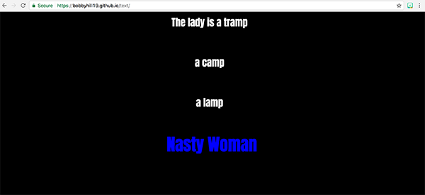
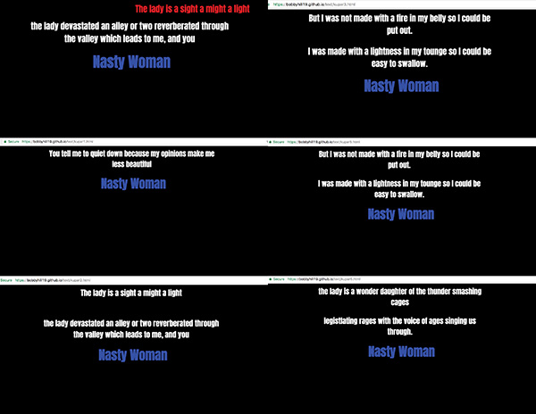

Nasty Woman is a site that is designed to make a statement about the position of women in society and . Both during and after the 45th United States Presidential election it has been shown that despite tremendous efforts to fight towards the equal treatment of women in society there is still a lot left to be done. During his campaign President Trump made many vulgar remarks towards women that stirred outrage throughout the nation. One of this remarks was “Nasty Woman”, directed to his running mate Hillary Clinton. This remark has since been turned into a phrase that encourages the empowerment and unity of women.
When entering the site you will view the combined poetry of James Baldwin’s “Le sporting-club de Monte Carlo” and Rupi Kaur’s “Disrespect”. These two poems are addresses to the many ignorant and discriminatory accounts women in society have to deal with on a daily basis. The stanza’s are set to how the writers originally crafted them on the site. However, the lines are broken a part on individual web pages to allow one to grasp and analyze the words of each writer. When a viewer hovers over the lines, they transition to the right of the web page to symbolize that these are actions and words that reflect the Republican parties actions during the election. Also, “Nasty Woman” appears on every individual webpage in order for it to be engrain into the viewers mind. The phrase Nasty Woman appears in the color blue to relate back to Hillary Clinton and her status.
